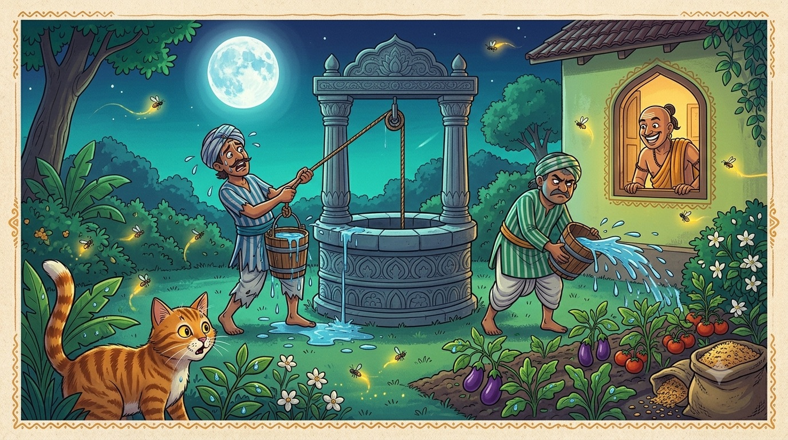

Tale TwoThe Thirsty Thieves
“Set a greedy man to work, and he will dig your garden for you — and call it his own idea.”
One very hot summer, no rain fell on the town for weeks and weeks. In Tenali Raman's back garden the mango sapling drooped, the jasmine wilted, and the little vegetable beds cracked like old bread. The garden was thirsty, and the well was deep. To carry up enough water to save the plants, Tenali would have needed ten strong helpers — and he could not pay even one.
"Oh, my poor garden," he sighed one evening. "If only some kind souls would haul up all that water for me." And he went inside to think.
Visitors in the night
That very night, Tenali heard a rustle at the wall. He peeped out — and there, creeping through the shadows, were two thieves, eyeing his house and whispering about what they might steal. Most people would have shouted for the guards. But Tenali Raman only smiled a slow, clever smile. An idea had arrived.
He nudged his wife awake and said, in a very loud whisper — far too loud for a real secret — "Wife! I am worried about thieves tonight. Our gold and jewels are not safe in the house. Quick — let us seal them in our heavy pots and lower them deep, deep down into the well in the garden. No robber would ever think to look at the bottom of a well!"
There was no gold in those pots at all. Tenali filled them with stones and old iron, tied them tight, and — splash, splash — lowered them into the well while the thieves' ears grew as wide as soup bowls.

A funny, warm children's-book illustration in South-Indian folk-art style, moonlit night scene: two comical, sneaky thieves in striped clothes sweating and grumbling as they haul heavy dripping buckets of water out of a round stone well and splash it everywhere across a vegetable-and-flower garden — the plants are visibly perking up green and happy. In a lit window of the house behind them, Tenali Raman peeps out with a big satisfied grin. Big round moon, fireflies, jewel tones of indigo, teal and marigold. Playful and not scary, no text baked into the image. Target size ~1280×720px, 16:9 landscape; keep the well, thieves and garden centred with safe margins — the art is letterboxed into a 16:9 box, so keep nothing important near the edges.
Generate this with your image agent, then drop the file here.
A long, wet night's work
The moment Tenali's lamp went dark, the two thieves rubbed their hands with glee. "Gold at the bottom of the well!" they whispered. "It is ours for the taking!" And they set to work.
All night long they hauled. Up came a bucket of water — splash — tipped out over the garden beds. Up came another — splash — and another, and another. Their arms ached, their backs groaned, and still they pulled, because greed is a hard master and would not let them stop. Bucket by bucket, the well grew shallow — and bed by bed, the thirsty garden drank its fill and turned green and glad.
At last, near dawn, their fishing hooks caught the heavy pots. With a great heave they dragged them up, hearts pounding — and found only stones and rusty iron. Not a single coin! The two thieves looked at their blistered hands, looked at the sopping-wet garden, and finally understood. With a groan they scrambled over the wall and were never seen on that street again.
A very good morning
Tenali Raman rose with the sun, stepped into his garden, and breathed in the smell of wet earth. Every plant stood tall and green, watered to perfection. "My, my," he said to the empty lane, loud enough for two sore thieves to hear wherever they were hiding, "what kind helpers I had last night. Do come again — my roses could always use a drink!"
You do not always need strength to win — sometimes you only need a good idea. And beware of greed: it will make a person work all night for a treasure that was never there.